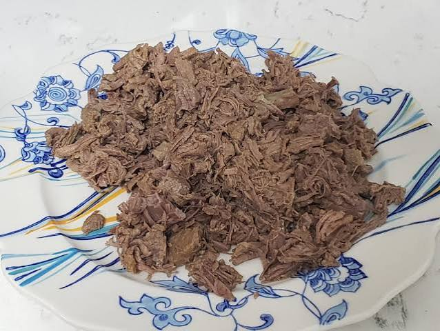
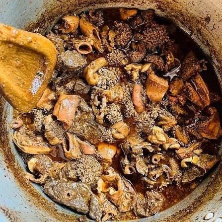
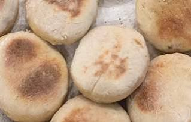

Traditional Meals & Dishes

Seswaa
Traditional tender pounded meat prepared with minimal ingredients (salt and water) cooked in a three-legged iron pot.

Bogobe jwa lerotse
A delicate traditional sorghum porridge cooked with African cooking melon (lerotse) and sour milk.

Dikgobe
A wholesome dish cooked using cowpeas (dinawa) combined with sorghum grains or corn samp.

Morogo wa dinawa
Nutritious dried cowpea leaves, boiled and seasoned, often served alongside maize or sorghum porridge.

Serobe
Traditional tripe stew made from goat or sheep intestines and stomach, cooked until completely tender.

Diphaphatha & Magwinya
Popular Batswana breads: Diphaphatha (stovetop flatbreads) and Magwinya (sweet fried fat cakes).